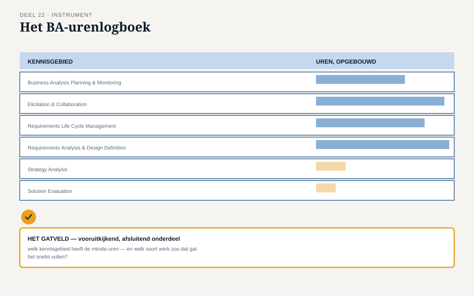

Deel 22 — Examentraining CCBA + portfolio en BA-urenlogboek
Reader · Ductus-cursus Business-analyse · niveau 2 (professional) · deel 22 van 30
22.1 Waar dit deel over gaat
Dit is het laatste deel van niveau 2. Het bestaat uit drie onderdelen: een proefexamen in de stijl van het CCBA-examen, een korte capstoneverdediging waarin de samenhang van het hele Programma Mutatieplatform wordt getoetst, en het BA-urenlogboek — het instrument waarmee je je eigen praktijkervaring gaat ontsluiten voor de urennorm die CCBA, anders dan ECBA, wél stelt.
Aan het eind van dit deel kun je:
- de CCBA-examenvorm en -eisen correct beschrijven, inclusief het onderscheid met ECBA;
- je eigen praktijkervaring retrospectief indelen naar de zes kennisgebieden;
- vaststellen in welk kennisgebied je de minste aantoonbare uren hebt, en hoe je dat gat gericht vult;
- met het BA-urenlogboek een eerlijk, groeiend overzicht bijhouden van je eigen kwalificatie.
22.2 Het CCBA-examen: vorm en eisen
Zoals in de opzet van deze cursus al is toegelicht: CCBA vereist, anders dan ECBA, aantoonbare praktijkervaring. Geverifieerd bij IIBA: 3.750 uur business-analysewerk in de afgelopen zeven jaar, waarvan minstens 900 uur in twee van de zes kennisgebieden óf 500 uur in vier van de zes, aangevuld met 21 uur professionele ontwikkeling en twee referenties.
Het examen zelf: 130 scenariogebaseerde meerkeuzevragen in 180 minuten, gescoord per kennisgebied — een sterk totaal compenseert geen zwak kennisgebied, zoals ook bij ECBA al gold voor de domeinen.
Deze cursus bereidt inhoudelijk voor op alle zes kennisgebieden — BAPM (deel 11-12), Elicitation and Collaboration (deel 14-15), RLCM (deel 16-17), RADD (deel 18-19), Strategy Analysis op praktijkniveau (deel 13), en Solution Evaluation (deel 21) — maar de uren, de referenties, en het portfolio kan geen enkele opleiding leveren. Die komen uit je eigen praktijk. Dit deel geeft je het instrument om die praktijk zichtbaar te maken.
22.3 Het proefexamen
Net als in niveau 1 volgt hier een proefexamen in de echte vorm — nu langer en met de kennisgebieden als indeling in plaats van de negen ECBA-domeinen. Zie het werkboek voor de volledige set vragen. Twee aanpaktips, aanvullend op wat je in niveau 1, deel 10 al leerde:
CCBA-vragen zijn vaker casusgebonden over meerdere zinnen. Waar een ECBA-vraag met een korte situatieschets volstond, bouwt een CCBA-vraag vaker een langere scenario op, soms met meerdere vragen die op hetzelfde scenario voortbouwen. Lees het hele scenario voordat je de vraag zelf beoordeelt.
Het antwoord dat het beste bij de proces- en governance-discipline past, wint vaker dan bij ECBA. Dit weerspiegelt het zwaartepunt van dit niveau: niet alleen wát de juiste analyse is, maar hóe die navolgbaar, getraceerd en verantwoord tot stand komt.
22.4 De capstone: samenhang over vier deelprojecten
Waar de capstone in niveau 1 één verandering verdedigde, verdedigt de capstone hier de samenhang van het hele programma — het thema dat sinds Iris’ zorg in deel 11 door heel dit niveau heen liep.
De opdracht
Verdedig, in vijftien minuten, hoe de elf instrumenten van dit niveau (aanpakblad tot en met waardemeetblad) samen borgen dat de vier deelprojecten van het Programma Mutatieplatform niet, zoals Iris in deel 11 vreesde, “hetzelfde gaan doen als bij WGP 2.0, alleen dan vier keer, ongecoördineerd.”
De rollen
Iris Tanghe, programmamanager — vraagt naar de samenhang zelf: waar precies voorkomt het instrumentarium dat twee deelprojecten tegenstrijdige aannames ontwikkelen?
Bram Wolfslag, architect — vraagt vanuit de architectuurlijn: hoe sluit de BA-discipline aan op het besluitenlogboek en de traceerlijnen die zijn eigen vak evenzeer raken?
Ruud Kalsbeek, manager Klantenservice — vraagt naar de mensen: is Karins ervaring (deel 15, deel 21) een uitzondering, of een teken van een structureel patroon dat elders in het programma ook kan spelen?
Rubric
Dezelfde drie criteria als in niveau 1, nu toegepast op programmaschaal: samenhang (sluiten de elf instrumenten logisch op elkaar aan, over de vier deelprojecten heen), eerlijkheid over wat is afgewezen of misgegaan (wordt Karins ervaring als leermoment erkend, of weggepoetst), standvastigheid onder tegenspraak.
22.5 Het BA-urenlogboek
Het derde onderdeel van dit deel is praktisch en persoonlijk: het BA-urenlogboek, waarmee je je eigen werk — binnen of buiten deze casus — retrospectief ontsluit naar de zes kennisgebieden.
Waarom dit een eigen werkvorm verdient
De meeste business analisten onderschatten hoeveel van hun werk al meetelt. Werk wordt zelden uitgevoerd met het label “dit is Business Analysis Planning and Monitoring” erop geplakt; het gebeurt gewoon, als onderdeel van een project of een lijnfunctie. Het BA-urenlogboek dwingt je terug te kijken en je eigen werk alsnog van dat label te voorzien.
Het blad
Voor elk van de zes kennisgebieden:
Geschatte uren tot nu toe, over de relevante periode (maximaal zeven jaar terug voor CCBA). Type werk — een korte, concrete omschrijving, geen abstracte functietitel. Voorbeeld — een specifieke situatie die je zou kunnen noemen als bewijs. Mogelijke referent — wie zou dit kunnen bevestigen?
Het veld dat het verschil maakt
Welk kennisgebied heeft de minste uren — en welk soort werk zou dat gat het snelst vullen?
Dit veld verschuift het BA-urenlogboek van een terugblikkende registratie naar een vooruitkijkend instrument. De meeste analisten hebben een scheve verdeling: veel ervaring in elicitatie en requirements, weinig in bijvoorbeeld Strategy Analysis of Solution Evaluation — precies de kennisgebieden die in de praktijk minder vaak expliciet worden beoefend. Dit veld helpt gericht te zoeken naar het soort werk (een strategische sessie meedraaien, een opgeleverde oplossing formeel evalueren) dat het ontbrekende gebied zou versterken.

Een eerlijke waarschuwing
Het BA-urenlogboek is een hulpmiddel om je eigen ervaring te ordenen — het is geen vervanging van de officiële urenregistratie en -beoordeling die IIBA bij een certificeringsaanvraag vereist. Raadpleeg voorafgaand aan een daadwerkelijke aanvraag altijd het actuele CCBA-kandidatenhandboek op iiba.org.
22.6 Terug naar het niveau als geheel
Niveau 2 begon met Iris’ zorg dat het Programma Mutatieplatform de fouten van WGP 2.0 zou herhalen, nu op grotere schaal. Elf delen en elf instrumenten later is het antwoord op die zorg niet “het kan niet meer misgaan” — dat belooft geen enkele cursus terecht — maar een concrete, navolgbare manier om samenhang te bewaken, waar niveau 1 dat nog aan één persoon en één verandering kon overlaten.
Vooruit naar niveau 3. Niveau 2 sloot af met Karins volgehouden wantrouwen — een menselijk, organisatorisch vraagstuk binnen één programma. Niveau 3 tilt de schaal nog een keer op: de Stelselovergang naar aanleiding van de Wtp-transitie, met een harde deadline van 1 januari 2028, en analyses die niet meer alleen een stuurgroep moeten overtuigen, maar terechtkomen in documenten bij DNB en AFM.